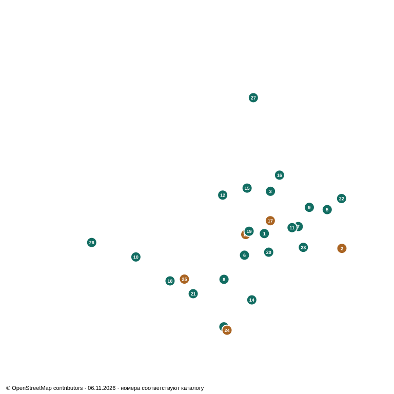

CORDÓN И СОСЕДНИЕ РАЙОНЫ
Новостройки
на одной карте.
Квартиры, парковочные места и налоговые основания для сравнения перед покупкой.
и два дополнения
Miraf Haedo 3 уже был в исходной подборке и учтён один раз. Nostrum Uruguay Centro и Tres Cruces Plaza добавлены после проверки.
Три проекта: что подтвердил ANV ↓
Основа карты сохранена локально. Номера совпадают с каталогом. Координаты ANV либо ориентировочные точки продавцов; источник указан в карточке. © OpenStreetMap contributors.
02 / СРАВНЕНИЕ
Все проекты
Цены «от» в USD, отдельно от гаража. Студия = monoambiente; 1D = спальня + гостиная; 2D = две спальни + гостиная. «—» означает отсутствие актуальной цены в подборке. Плановые сроки и публичные предложения не подтверждают наличие конкретной квартиры.
Фильтр бюджета берёт минимум по выбранным типам. При включённом гараже учитываются только проекты с опубликованной ценой места, включая явно помеченные цены из предыдущей подборки. Сумма не включает комиссию, оформление и расходы на заселение; она не гарантирует доступность пары «квартира + гараж».
| Проект / адрес | Студия от | 1D от | 2D от | Гараж от | Плановая сдача | Статус проекта |
|---|
Нет проектов по этим условиям. Измените фильтры.
03 / НАЛОГОВЫЕ ОСНОВАНИЯ
Vivienda Promovida ≠ индивидуальные 100%.
Три запрошенных проекта присутствуют в официальном реестре. Участие проекта в программе подтверждено. Полное освобождение конкретной квартиры и оставшийся срок отдельно не удостоверены.
Как применяется освобождение
Статья 12 Декрета 355/011 распространяет льготы на приобретённые promovidas viviendas, предназначенные для постоянного проживания и сдаваемые по договорам не короче 12 месяцев. Она охватывает IRPF, IRNR или IRAE в зависимости от налогоплательщика.
Общий срок: налоговый период завершения строительства и девять следующих. Покупка и перепродажа не запускают новые десять лет. При завершении в 2028 году примерный интервал — 2028–2037; плановая передача ключей не устанавливает фактическое начало срока.
Закон предусматривает 100% для установленных зон либо соответствующей гарантии аренды; в остальных предусмотренных случаях — 60%. DGI в Consulta 6414 разъясняет 100% для зон 01 и 02 Montevideo. Статья 12 ↗ · DGI 6414 ↗
Что подтверждено и что ещё требуется
Подтверждено: номер проекта, дата declaratoria promocional, адрес/padrón, количество квартир и парковок в реестре ANV. Коммерческий бренд сопоставлен по адресу и характеристикам. Реестр не выдаёт персональное налоговое заключение покупателю.
Не удостоверено: включение выбранной квартиры в льготные единицы, применимая зона по действующему приложению к регламенту, фактический final de obra, соблюдение условий аренды и неистёкший срок. Поле ZONA для трёх проектов в геослое пустое; по одному этому источнику ставку 100% установить нельзя.
До покупки: запросить declaratoria promocional и её приложения с конкретной unidad/padrón, подтверждение зоны и размера освобождения, дату завершения работ и расчёт остатка срока. Отдельный гараж или коммерческое помещение автоматически не получают льготу жилой квартиры.
Для Impuesto al Patrimonio статья 12 отдельно требует не менее шести месяцев аренды в соответствующем году после года завершения работ. Это условие не следует переносить на IRPF/IRNR.
Готовый запрос продавцу на испанском
¿Pueden enviar la declaratoria promocional y sus anexos, el número de proyecto ANV y el padrón/unidad de la vivienda que se ofrece? Necesito confirmar que esa unidad está comprendida, la zona aplicable y el porcentaje de exoneración de IRPF/IRNR por arrendamiento permanente, el ejercicio de finalización de obra y el plazo restante. ¿Qué condiciones debe cumplir el contrato? ¿Hay un garaje disponible para comprar junto con esa unidad y cuál es su precio final?
04 / ИСТОЧНИКИ И МЕТОД
Срез на 6 ноября 2026 года
Официальные источники
- ANV: проекты Vivienda Promovida — страница публикации.
- Реестр на 30.09.2026 (XLSX) — листы PROYECTO и SUBPROYECTO; локальная копия.
- Геослой MVOT/ANV — адреса и координаты. Отсутствие объекта в нашем сопоставлении не доказывает отсутствие статуса.
- IMPO: Декрет 355/011, статья 12 — действующая редакция.
- DGI: Consulta Tributaria 6414 — разъяснение по зонам.
Публичные предложения
Восстановлены все 25 уникальных проектов из двух ответов исходного чата. Текущие цены и сроки взяты из прочитанных карточек PROP, а для Ágora Constituyente — INGAR. Ссылки на застройщиков и дополнительные объявления сохранены; статус чтения каждой ссылки виден в карточке.
Основные цены — сопоставимый срез одного продавца; альтернативные цены и сроки явно отмечены. Для гаражей, цены которых повторно не найдены, сохранена подпись «из исходной подборки». Цены al costo и contado требуют изучения соответствующей схемы платежей.
Дата проверки страницы не означает дату обновления объявления. Новые изменения после 30.09.2026 могли ещё не попасть в опубликованный реестр. Ни по одному объекту каталог не удостоверяет индивидуальное освобождение на 100%.
Данные каталога JSON · Сопоставление с ANV · Как открыть каталог